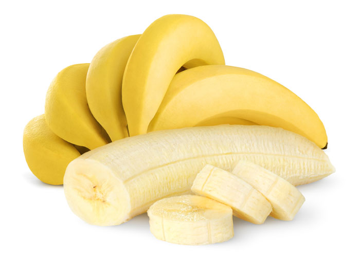
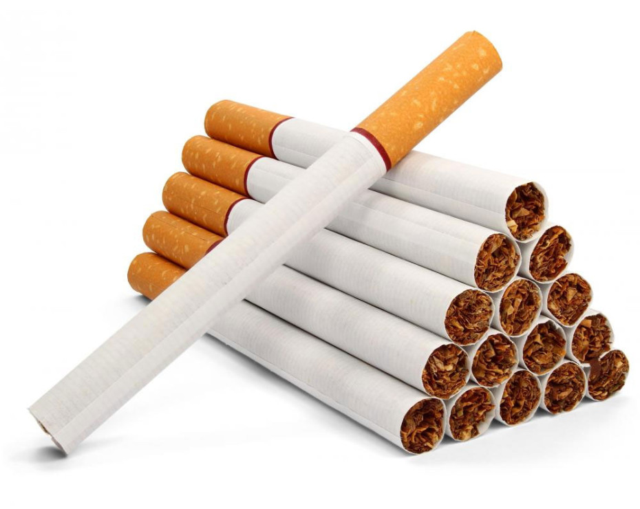
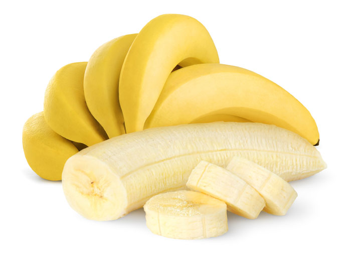
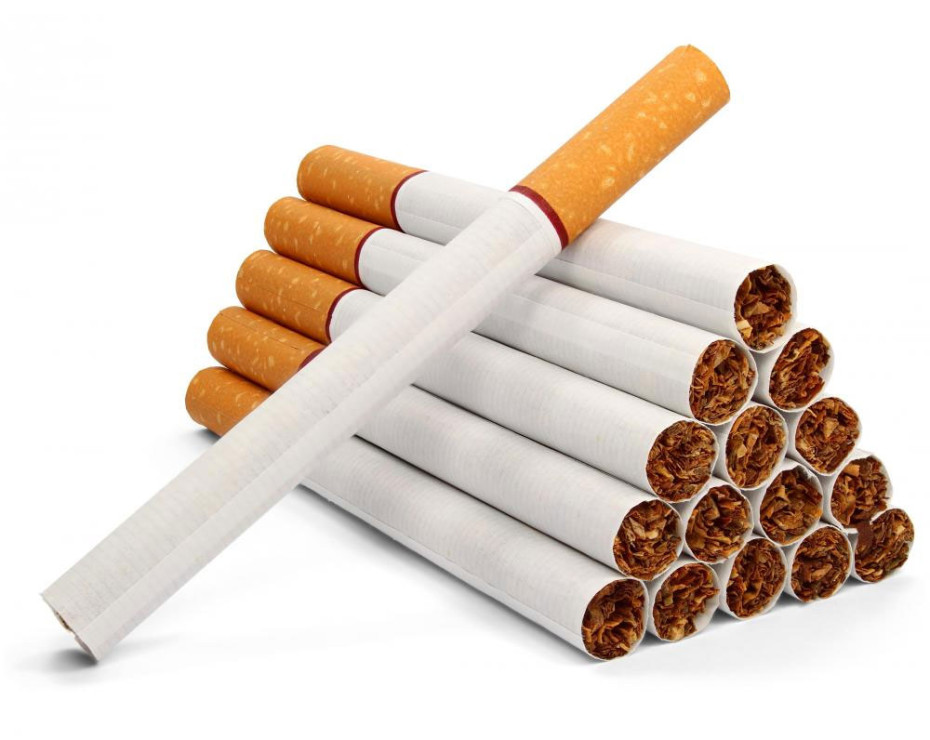

CORRECT!
Tobacco users are exposed to the maximum amount of radiation dose. Tobacco can absorb radioactive Radon from the atmosphere causing an added radiation exposure of about 1300 mrem per year. Living in a concrete building will add 7 mrem while a banana results in a dose of 0.01 mrem only.
The Nuke Quiz #1
Question 5
Which of these consumer products exposes you to maximum radiation?
 


